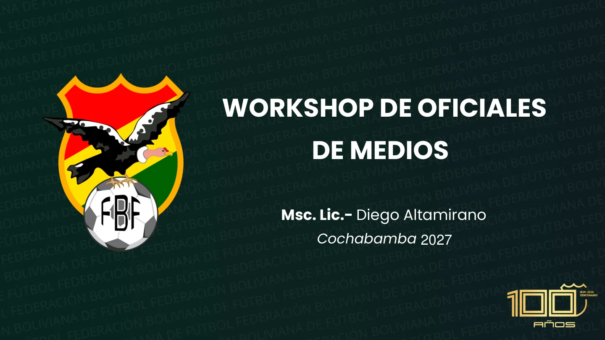
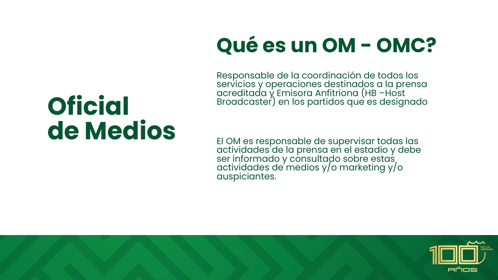
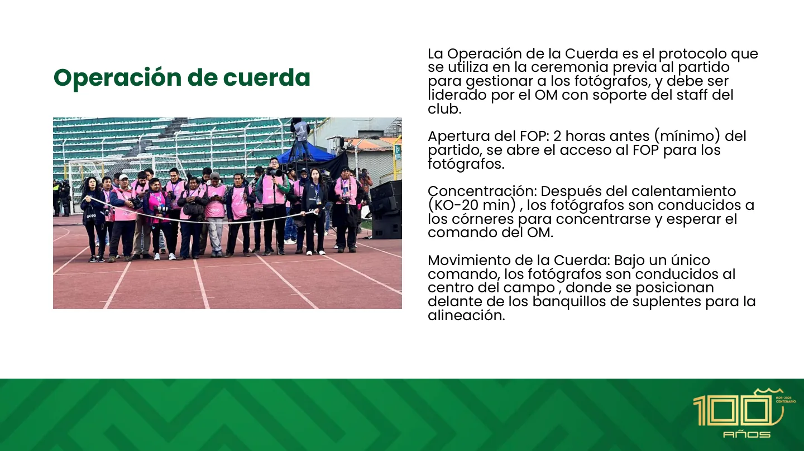
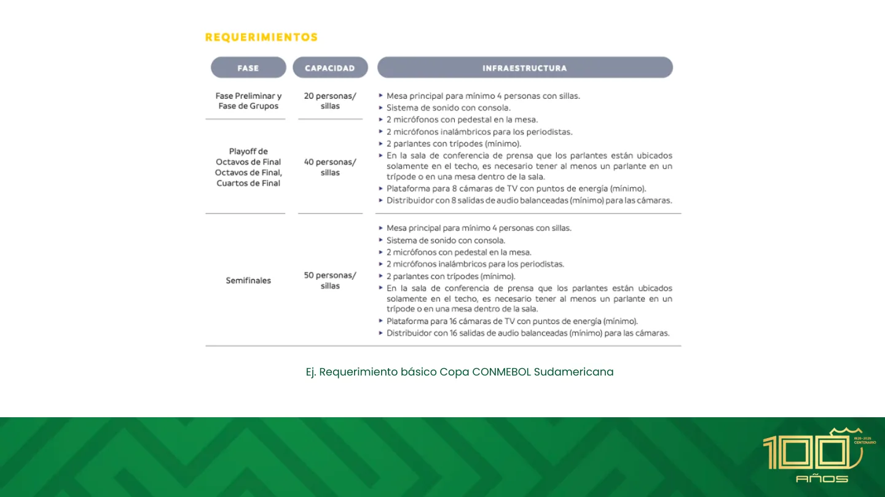
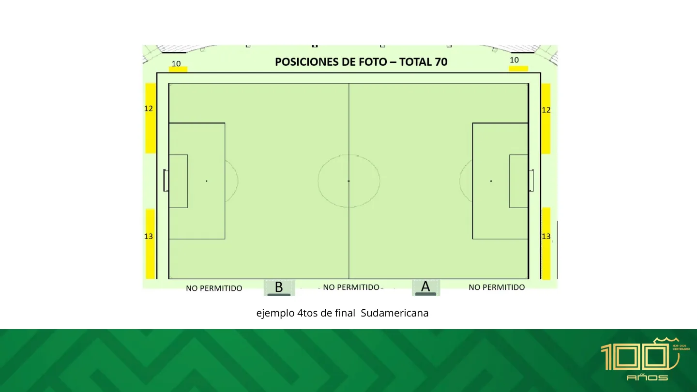
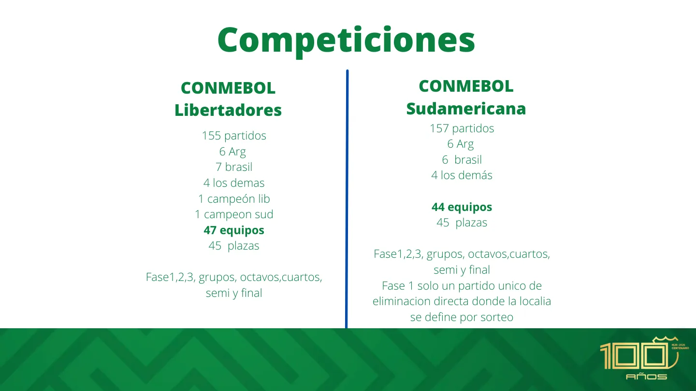
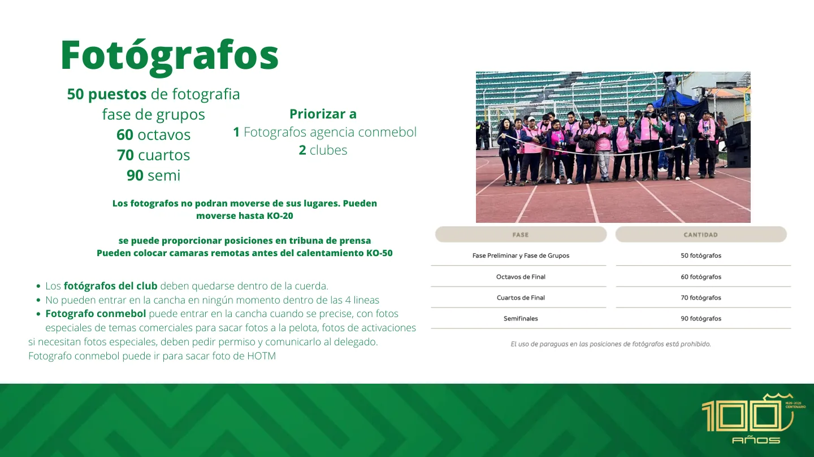
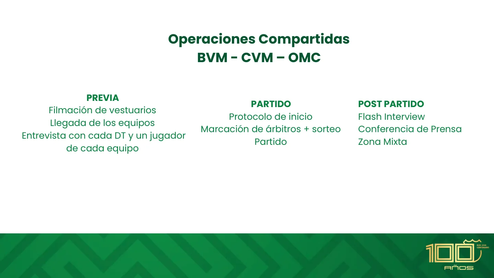
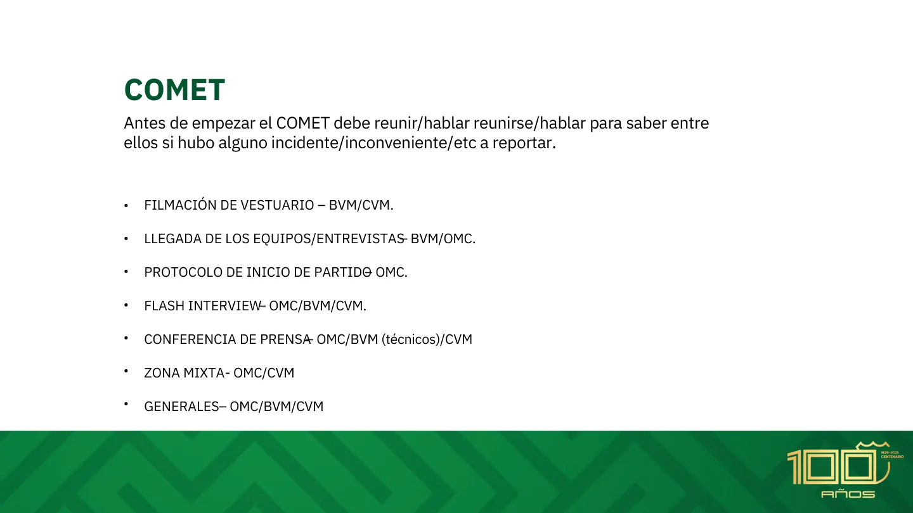

Guía operativa para el rol del Oficial de Medios (OM / OMC) en los partidos de la FBF y las competiciones CONMEBOL.

Representar a Bolivia en los torneos es un orgullo y una gran responsabilidad. El trabajo del OM es indispensable para que las competiciones se desarrollen con calidad y seguridad.
El Oficial de Medios (OM) es el Oficial de Partido responsable de la coordinación de todos los servicios y operaciones destinados a la prensa acreditada y a la Emisora Anfitriona (HB) en los partidos para los que es designado.
Supervisa todas las actividades de prensa en el estadio y debe ser informado y consultado sobre cualquier asunto de medios, marketing o auspiciantes. Su inclusión estandarizó el servicio en todos los partidos, sin importar el estadio, la ciudad o el país.

Trabaja junto al Delegado de Partido, el BVM, el CVM, el staff del estadio y los Jefes de Prensa de los clubes.
Asegura el cumplimiento de los reglamentos de prensa; colabora con BVM y CVM en las restricciones a NHR y las directrices de la HB.
Lidera la logística de todas las actividades de prensa, como la Zona Mixta o la Conferencia de Prensa.
Elabora un reporte detallado de las operaciones de prensa y de cualquier incidencia, que puede tener validez disciplinaria.
El contacto con la prensa es solo para temas operacionales, servicios y facilidades para los acreditados.
No concede entrevistas ni habla en nombre de la FBF. Los temas institucionales se canalizan a Comunicación.
Conducta profesional, sentido común en la resolución de problemas y respeto a las prioridades (ej. derechos de los HB).
Representantes oficiales designados en cada encuentro para asegurar que el evento cumpla los estándares técnicos, disciplinarios, logísticos y de seguridad.
Los espacios que el club local debe garantizar para que la prensa acreditada y la Emisora Anfitriona trabajen con calidad y seguridad.
Sitio para que la prensa trabaje antes y después del partido. Mesas, sillas, energía e internet (obligatorio). Obligatoria desde octavos/play‑offs.
Obligatoria en finalesPosiciones con y sin mesa, con internet y energía. Las cabinas de TV/radio se priorizan para los Titulares de Derechos (RH).
Prioridad RHUso exclusivo de RH; al menos 5 posiciones por partido, en ubicación central, del lado de la cámara principal y con vista completa del campo.
Mín. 5 posicionesEspacio único para ambas conferencias, con backdrop (3×2 m), iluminación, sonido y plataforma de cámaras según el Manual de Clubes.
Backdrop 3×2 mEntre vestuarios y autobuses. Capacidad para 30+ medios, dividida RH / NHR, con vallado, iluminación y 2 backdrops. Todos los jugadores deben pasar.
Dividida RH / NHRDetrás de los carteles, cerca de las líneas de fondo. Los fotógrafos permanecen sentados todo el partido. Prohibida la circulación frente a los bancos.
Fotógrafos sentadosProtocolo de la ceremonia previa para gestionar a los fotógrafos, liderado por el OM con apoyo del club.
Apertura del FOP: 2 horas antes (mínimo) se abre el acceso a los fotógrafos.
Concentración: tras el calentamiento (KO‑20) son conducidos a los córneres a esperar el comando del OM.
Movimiento: bajo un único comando avanzan al centro, delante de los banquillos, para la alineación.
Regreso: tras la foto de árbitros y capitanes, vuelven lo más rápido posible a sus posiciones originales.



La operación del OM día a día: desde la designación y los contactos previos hasta las tareas post‑partido.
Donde la infraestructura no es de élite, el OM prioriza la funcionalidad básica: Welcome Desk y una Zona de Declaraciones fija que sustituye a la Zona Mixta compleja.
Mínimo 3 funcionarios para asistir a la prensa; al menos 7 en partidos con Operación de Cuerda. El club controla el acceso al FOP (solo acreditados con SAD).
Filmar dentro del estadio es solo para RH. Las posiciones de foto y Flash en el FOP exigen chaleco y credencial durante todo el tiempo dentro del FOP.


Cada oficial tiene su responsabilidad, pero la entrega correcta del partido depende de la coordinación conjunta — sobre todo durante el MD. Al terminar las actividades de prensa, los tres se reúnen para reportar incidencias.
Solo HB y Digital CONMEBOL, antes de que lleguen los jugadores y en el horario de la reunión de coordinación. El CVM garantiza el vestuario limpio y con productos del patrocinador. Prohibida la presencia de RH; la HB entrega el material.
La HB registra desde el ómnibus hasta el ingreso a vestuarios (≈10 min entre llegadas). El CVM lleva el backdrop al punto acordado; el BVM y el OSC aseguran una toma limpia. Las TV y redes de clubes graban siempre detrás de la HB.
En la llegada, solo por la HB, tras el ingreso a vestuarios. Máximo 3 minutos, backdrop obligatorio. El BVM chequea posición, micrófono, iluminación y sonido; avisa al OMC para traer al DT y al jugador.
Se cumple la cuenta regresiva tal cual. El BVM ensaya con HB y CVM pórtico, portapelota y carteles, y coordina la marcación de árbitros y el sorteo con el delegado. El OMC lleva la operación de cuerda.
Inmediatamente al final: la HB primero, luego los RH (hasta 3 jugadores por equipo, 60 s cada uno). Backdrop obligatorio y reportero fuera de plano. El BVM organiza prioridades; el CVM entrega el BOTM.
Máx. 15‑20 min tras el partido, con DT y un jugador. Orden: visitante y luego local. El OMC chequea la sala con el club; el CVM, el backdrop y que el espacio esté libre de marcas.
Dividida en TV (RH y NHR, con backdrop) y prensa escrita / radios. Prioridad first come, first served, siempre con prioridad RH. Los NHR no hacen vivo: todo su material es grabado. Suele activarse durante la conferencia.
Antes del COMET, los tres oficiales se reúnen para reportar incidencias por área: filmación de vestuarios, llegadas, protocolo de inicio, Flash, conferencia y Zona Mixta.


Las siglas y conceptos que aparecen a lo largo del workshop.
La presentación completa del workshop, con su tipografía y fotografías originales. Toca cualquier diapositiva para abrirla: podrás hacer zoom, saltar con la tira de miniaturas o activar la reproducción automática.